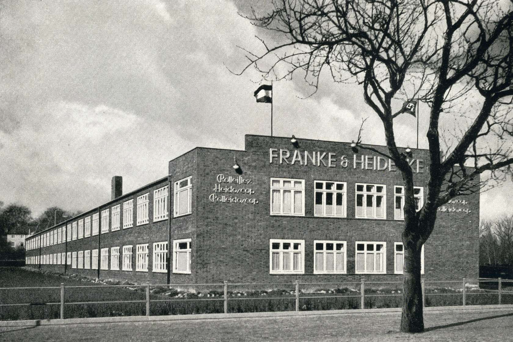

Corporate Information
Rollei was a German company that established a worldwide reputation with the Rolleiflex, a twin-lens reflex camera.
Rollei was founded in 1920 as the Werkstatt für Feinmechanik und Optik, Franke & Heidecke in order to make a twin-lens reflex camera. The company changed its name and legal form many times: to Rollei-Werke Franke & Heidecke in 1962, to Rollei-Werke Franke & Heidecke GmbH & Co. KG in 1979, to Rollei Fototechnic GmbH & Co. KG in 1981, and finally to Rollei GmbH in 2004. In 2006, the headquarters of Rollei GmbH were moved to Berlin while production was transferred to Rollei Produktion GmbH, currently Franke & Heidecke GmbH, in Braunschweig. The company underwent more radical restructuring in 2007/08.
The frequent name-changes are an indication of a turbulent history: After the popularity of the twin lens reflex cameras declined, the Rolleiflex was supplemented with a variety of models. The company expanded its production facilities and product range at the end of the 1960s beyond what a small company like Rollei could manage. Rollei's decision to start manufacturing in Singapore in 1970 was regarded as a pioneering achievement by the photographic industry. Unfortunately, it also damaged the companies reputation as a German precision manufacturer. In 1982, after many failed attempts at restructuring, the company finally achieved success by focusing on medium format cameras along with a few other products. Surveying systems were added to the product range in 1986, and modern digital and compact cameras were included from 1991.
Rolleiflex medium format cameras continued to be produced by DHW Fototechnik up to 2014—a company founded by former Franke & Heidecke employees.DHW Fototechnik announced two new Rolleiflex cameras and a new electronic shutter for photokina 2012.The company filed for insolvency in 2014 and was dissolved in April 2015, ending any further production. The factory production equipment and remaining stocks of parts were auctioned off in late April 2015. A smaller company was created again with former DHW Fototechnik employees, under the name DW Photo at the same location.DW Photo focuses on producing the Rolleiflex Hy6 mod2 medium format SLR camera (digital & film), servicing existing cameras, including providing firmware and hardware upgrades.